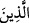

etmemek delilik olarak ifâde edilmiştir. Çünkü deli iftirâda bulunmaz. Yalan kasıtlı olur.
Delinin ise kasdı olmaz. Buna göre delilik halinde haber veren, umûmî yalanın değil,
özel iftirânın hissedarıdır.
Sonra Allah Teâlâ onların bu şüpheli ve tereddüdlü sözlerine cevap vererek şöyle
buyurdu: “Hayır! Âhirete inanmayanlar” Yâni onların iddiâ ettikleri gibi Muhammed
(s.a.) iftirâ ve delilikle ilgisi yoktur. O bunların ikisinden de beri ve uzaktır. Bilakis bu
sözü söyleyen, haşr ve neşri inkâr edenler âhirette “azaptadırlar ve” dünyada “derin
bir sapıklık içindedirler.” Yâni onlar bu durumdan kurtulmaları umulmayacak şekilde
doğrudan ve hidâyetten uzaktırlar.
Burada sapıklığın uzak olarak vasfedilmesi mübâlağa için mecâzî isnad kabilindendir.
Çünkü uzak olma, sapık olan kişinin vasfıdır. Zira doğru yoldan uzaklaşan odur. Doğru
yoldan uzaklaştıkça da daha sapık olur.
Burada azâbın, onun mûcip ve müsebbibi olan sapıklıktan önce zikredilmesi, onları
kötü edecek şeyi açıklama hususunda acele etmek içindir.
Zarfın mazrûfu kaplayıp kuşatması gibi azab ve sapıklık da onları kuşatıcı kılınmıştır.
Çünkü azab sebepleri hep onlarla beraber olunca sanki onlar hep azabın ortasındadırlar.
Ayette “ (onlar)” zamiri yerine () ism-i mevsûlünün konulması, onların cür’et
ettiği şeyin (Hz. Peygamber (s.a.) hakkında söyledikleri sözlerin) sebebinin âhireti ve
oradaki çeşit çeşit azabı inkâr etmeleri olduğuna dikkat çekmek içindir. Eğer böyle
olmasaydı azab endişesiyle bunu yapmazlardı.
Ayetin hulâsâsı gerçek deliliği onlara isbât etmektir. Çünkü azâbın olacağından ve
azâbı gerekli kılan dalâletten gaflet, asıl deliliktir. Hem de ne delilik! Akıl
bozukluğudur, hem de ne bozukluk! Çünkü onların anlayış ve idrâkleri tam ve kâmil
olsaydı işin hakîkatini anlarlar ve böyle kötü sözlere cür’et etmezlerdi.
Büyüklerden birisi şöyle demiştir: Nasıl ki küçük bir çocuk esir alınıp yabancı bir
ülkeye götürüldüğünde -ona hatırlatılsa bile- asıl vatanını hatırlamayacak kadar
unutursa, aynı şekilde katı kalpli insanın nefsi de kendisine hatırlatılsa bile asıl vatanı
olan âhireti hatırlayamaz ve onu inkâr eder. O konuda söylediklerini de alaycı olarak
söyler. Düşünmez ki o Âdem (a.s.)’ın sulbünden çıkartılmış bir zerre iken bütün cüzleri
darmadağın idi. Nasıl Allah onun darmadağın olan şahsının cüzlerini bir araya getirdi
ve onu yeni bir mahlûk kıldı! İşte aynı şekilde Allah Teâlâ onun (ölünce) dağılan
cüzlerini yeniden diriltmek (ba’s) için bir araya getirir.
Onun emriyle yokluktan varlık ortaya çıktı
O’ndan gayrı yok olanı kim var edebilir?
Sonra adem/yokluk bilinmezliğine götürür
Oradan mahşer sahrasına götürür
Âdemin toprağına ruh verir
O anda Âdemin toprağı dirilir
Bir kimse ölümden sonra dirilmenin benzerini görmek isterse